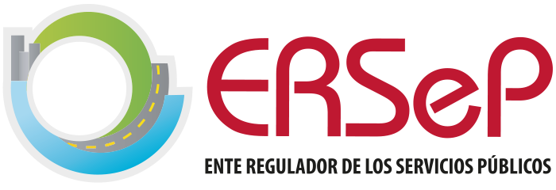

Exportá la lista de SharePoint (Exportar → CSV) y cargala acá; también sirve un .xlsx. Puede ser el listado de Permisos de Explotación (una fila por permiso) o una lista de actas con su enlace. Tiene que tener al menos la columna de la empresa.
Elegí qué columna identifica a la empresa y cuál tiene el enlace. Todas las demás columnas se muestran y se pueden buscar.
Con la ruta base, cada empresa se vincula a la subcarpeta con su nombre. Se quitan los puntos finales y los caracteres que SharePoint no admite (por ejemplo, EMPRESA S.R.L. → carpeta EMPRESA S.R.L).
Cargá el índice de carpetas de Actas de Transporte (el Excel con las columnas Carpeta y Enlace completo). Cada empresa se vincula a su carpeta por el nombre. Las que no figuren en el índice usan la ruta base de arriba.
Si ya se enviaron contraseñas antes, cargá el credenciales-actas.csv anterior: se mantienen las mismas y sólo se generan para empresas nuevas. Así una actualización del listado no obliga a reenviar los accesos.
| Empresa | Usuario | Contraseña | Actas |
|---|